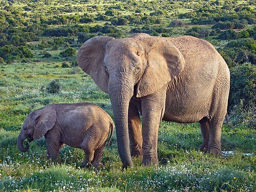

Общая информация | Слоны в искусстве | Слоны и человек
Слоны — крупные растительноядные млекопитающие. Современные слоны живут в Африке и Азии.
Хобот — это сросшиеся нос и верхняя губа. С его помощью слон дышит, набирает воду и берёт пищу. Бивни — это удлинённые резцы.
Слоны питаются травой, листьями, корой и плодами. Самки и детёныши обычно живут семейными группами.

Подробнее: Слоновые — Википедия.